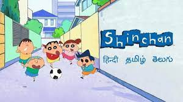

ShinChan
20 days ago

Shinchan, also known as Crayon Shinchan, is a beloved character in the world of Japanese animation. Created by Yoshito Usui, Shinchan first made his appearance in a manga series in 1990, before transitioning to television screens as an animated series in 1992. Since then, Shinchan has become a cultural icon, captivating audiences of all ages with his irreverent humor, mischievous antics, and endearing charm.
At the heart of the Shinchan series is its titular protagonist, Shin Nohara, a precocious and energetic five-year-old boy with a penchant for getting into trouble. Living in the fictional town of Kasukabe, Shinchan navigates the ups and downs of childhood alongside his family and friends, often finding himself in hilarious and unexpected situations. From causing chaos at school to driving his parents to the brink of insanity with his antics at home, Shinchan's escapades are as entertaining as they are relatable.
What sets Shinchan apart from other animated characters is his unabashed honesty, fearless spirit, and infectious zest for life. Despite his young age, Shinchan fearlessly speaks his mind, often getting himself into trouble with his blunt observations and cheeky remarks. However, beneath his mischievous exterior lies a heart of gold, as Shinchan's loyalty to his family and friends shines through in moments of need. It's this combination of humor, heart, and authenticity that has endeared Shinchan to audiences around the world.
Shinchan's influence extends far beyond the realm of animation, permeating into various aspects of popular culture. From merchandise and video games to spin-off films and even a dedicated theme park in Japan, Shinchan's presence is felt far and wide. The character's distinctive appearance — characterized by his large head, round eyes, and signature red shorts — has become instantly recognizable to fans of all ages.
Tragically, Yoshito Usui, the creator of Shinchan, passed away in 2009. However, his legacy lives on through the enduring popularity of the character he brought to life. The Shinchan franchise continues to thrive, with new episodes of the animated series being produced to this day. Across generations, Shinchan remains a beloved figure in Japanese animation, reminding us all to embrace our inner child and find joy in life's simple pleasures. In conclusion, Shinchan is more than just a cartoon character — he's a symbol of childhood innocence, mischief, and laughter. Whether you're a fan of animation or simply looking for a lighthearted escape, Shinchan's adventures are sure to bring a smile to your face and warmth to your heart. So, the next time you find yourself in need of a pick-me-up, why not join Shinchan on his latest escapade? After all, life is too short not to embrace your inner mischief-maker and enjoy the ride.